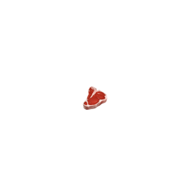

주요 관광지
-
휘닉스평창루지
평창 용평리조트 내에 자리한 마운틴코스터는 SNS에서 뜨거운 반응을 얻고 있는 액티비티다. 마운틴코스터를 타고 빠른 속도로 급경사와 커브를 미끄러지듯 내려오다 보면 평창의 시원한 바람과 짜릿한 스릴에 무더위는 금세 잊게 된다.
이용료 | 대인 15,000원 소인(36개월 이상~13세 이하) 12,000원 -
이효석문학관
2002년 문을 연 이효석 문학관에는 이효석 작품 일대기와 육필원고 유품 등을 한눈에 볼수 있다. 전시되는 육필원고와 유품 등은 가산문학 선양회를 중심으로 이루어졌으며 해마다있는 선생님 추모식이 열린다.
입장료 | 일반 2,000원 군민 1,000원
-
대관령 양떼목장
길이 330m의 평창 목장으로 봄, 여름, 가을, 겨울 그리고 시시각각 변하는 목장의 모습을 통해 자연의 아름다움을 느낄 수 있다. 먹이주기 체험장에서 인당 한 소쿠리씩 건초를 받아 양들에게 먹이를 주는 체험을 할 수 있다.
입장료 | 대인 7,000원 소인(학생) 5,000원 우대 4,000원 -
백룡동굴
백룡동굴은 해발 235m 지점이 있는 천연 동굴이며, 수면으로부터 약 15m 위의 지점에 위치한다. 현재 생태학습형 체험동굴로 개방하여 경관을 직접 탐험함과 동시에 전문 동굴가이드의 해설에 의해 관람할 수 있다.
입장료 | 성인 18,000원 청소년/어린이/군인 14,000원
맛집 및 카페
-

메밀꽃필무렵
한식
주소 | 강원 평창군 봉평면 이효석길 33-11 -
흔들바위
한식
주소 | 강원 평창군 봉평면 태기로 1 -

평창한우다래
한식(육류)
주소 | 강원 평창군 봉평면 태기로 120